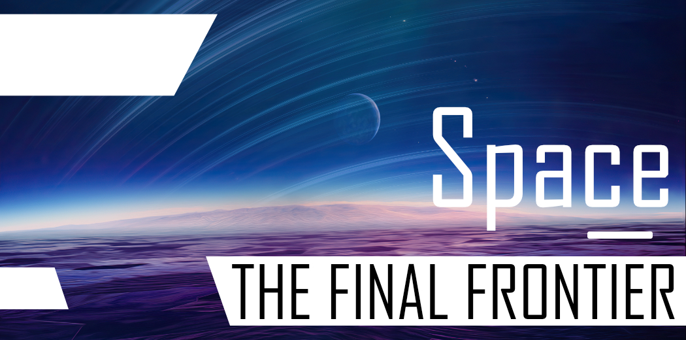
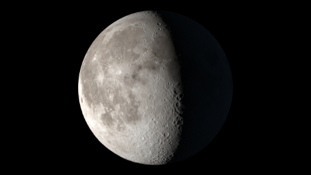
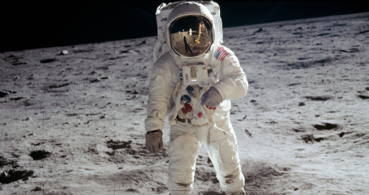
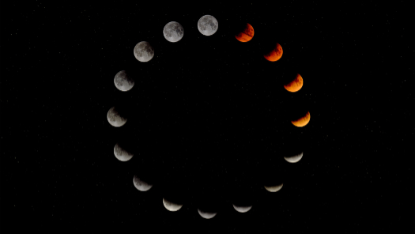
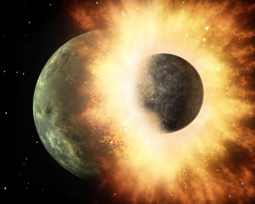
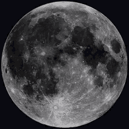

SPACE - THE FINAL FRONTIER | THE MOON
|
The Moon is the only natural satellite revolving around the Earth. The Moon is the only place besides Earth where humans have set foot. The rotation between the Moon and the Earth are so in sync that we only see one side of the Moon. Only 24 humans have travelled from the Earth to the Moon and of those 24, only 12 have walked on the surface. Man first visited the Moon in 1969 and the last time a person set foot on the lunar surface was in 1972. |
|
|  |  |
|
The most widely accepted explanation for the existence of the Moon is that it was created when a rock the size of Mars ran into the Earth. A full moon occurs when the Moon is on the opposite side of the Earth from the Sun and the Sun illuminates the it's face fully. Usually lunar craters are either named for deceased scientists, scholars, explores and artists OR for deceased astronauts/cosmonauts. |
|
|  |  |
Moon spin :)
